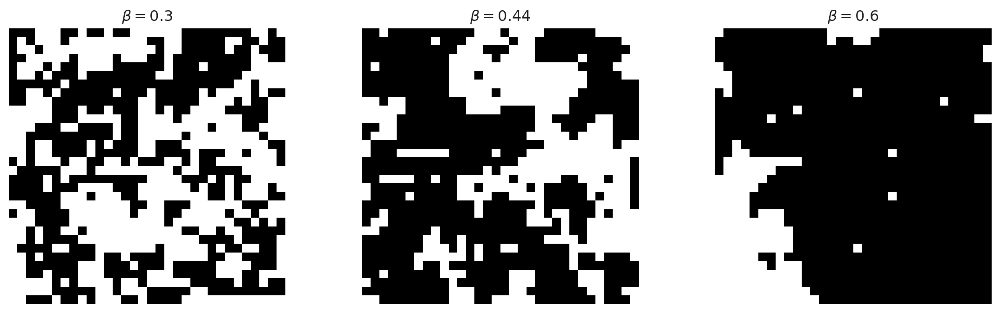
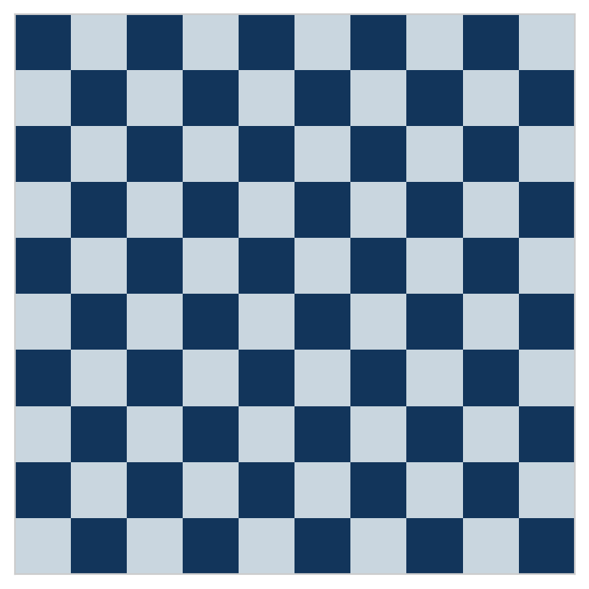
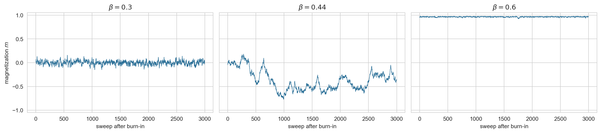
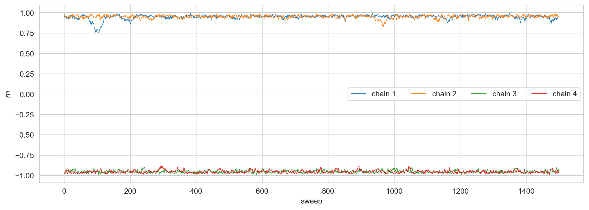

Lab 6: Gibbs sampling and MCMC diagnostics
Department of Biostatistics and Computational Biology, University of Rochester Medical Center
In lecture, Gibbs sampling was derived as Metropolis-Hastings with acceptance probability one. For the zero-field Ising model,
\[ p(\mathbf{x}) \propto \exp\left(\beta\sum_{i\sim j}x_i x_j\right), \qquad x_i\in\{-1,+1\}, \]
the full conditional of one spin depends only on its neighbours:
\[ p(x_i=+1\mid\mathbf{x}_{-i})=\sigma(2\beta s_i), \qquad s_i=\sum_{j\sim i}x_j. \]
Today you will turn that equation into two samplers and determine whether their output is trustworthy.
n x n numpy array containing only -1 and +1.x in place and return it, so call them with x.copy() when the original is needed.Put the implementation in a Python module named lab6.py. It should contain the functions developed in this lab, including the single-site and block Gibbs updates and split_rhat.
Create lab6.qmd for the experiments and write-up. Import your functions from lab6.py, and include the checks, figures, timing results, and written answers. Develop and test lab6.py first; render the complete document once the functions pass the checks.
You may test lab6.py interactively in either environment:
Begin lab6.qmd with:
If you test in JupyterLab, automatic reloading lets the notebook see edits to lab6.py without restarting its kernel:
Implement the neighbour sum \(s_i\) of the site stored at x[i, j], without wrapping across the boundary.
Check an interior site, a corner, and a non-corner boundary site:
x_test = np.array([[ 1, 1, -1],
[-1, 1, 1],
[ 1, -1, -1]])
print("center:", local_neighbour_sum(x_test, 1, 1))
print("corner:", local_neighbour_sum(x_test, 0, 0))
print("boundary:", local_neighbour_sum(x_test, 0, 1))center: 0
corner: 0
boundary: 1The answers should be 0, 0, and 1.
Given \(s_i\), draw a new value from the full conditional. This is a Gibbs draw, not a proposal followed by an acceptance decision.
Note
The old value of x[i, j] does not enter the full conditional. Gibbs draws a new value from the full conditional, so the spin may either stay the same or change.
For an interior site, \(s_i\in\{-4,-2,0,2,4\}\). Compute the probability of a positive spin at each possible value.
for beta in [0.3, 0.44, 0.6]:
probs = [1 / (1 + np.exp(-2 * beta * s)) for s in [-4, -2, 0, 2, 4]]
print(f"beta={beta:.2f}:", np.round(probs, 3))beta=0.30: [0.083 0.231 0.5 0.769 0.917]
beta=0.44: [0.029 0.147 0.5 0.853 0.971]
beta=0.60: [0.008 0.083 0.5 0.917 0.992]Check that:
Visit every site once. We use a fresh random order so that no site is always updated first or last.
Run 200 sweeps from random noise:
x0 = rng.choice([-1, 1], size=(32, 32))
states = []
for beta in [0.3, 0.44, 0.6]:
x = x0.copy()
for _ in range(200):
single_site_sweep(x, beta, rng)
states.append(x.copy())
fig, axes = plt.subplots(1, 3, figsize=(12, 3.6))
for ax, beta, x in zip(axes, [0.3, 0.44, 0.6], states):
ax.imshow(x, cmap="Greys", vmin=-1, vmax=1)
ax.set_title(f"$\\beta={beta}$"); ax.axis("off")
plt.tight_layout(); plt.show()

Colour the lattice like a checkerboard. Every neighbour of a dark site is light, and every neighbour of a light site is dark.
Given all light spins, the dark spins are conditionally independent:
\[ p(\mathbf{x}_{\mathrm{dark}}\mid\mathbf{x}_{\mathrm{light}}) =\prod_{i\in\mathrm{dark}}p(x_i\mid\mathbf{x}_{\mathrm{light}}). \]
We can therefore draw every dark spin simultaneously, then recompute the neighbour sums and draw every light spin simultaneously.
Use zero padding and array slices to produce an array s with the same shape as x.
dark_mask is a Boolean array: it is True at dark sites and False at light sites. np.logical_not(dark_mask) reverses those values to create light_mask.
def block_gibbs_sweep(x, beta, rng, dark_mask):
"""Update the dark block given light, then light given the new dark block."""
light_mask = np.logical_not(dark_mask)
for mask in (dark_mask, light_mask):
# TODO: recompute all neighbour sums
# TODO: compute every p(x_i = +1 | neighbours)
# TODO: draw an array of +1/-1 values
# TODO: overwrite x only where mask is True
raise NotImplementedError
return xImportant
Recompute the neighbour sums between the two half-sweeps. The light update must condition on the new dark spins, not the old ones.
On a \(3\times3\) lattice there are only \(2^9=512\) states, so expectations under \(p\) can be computed exactly by enumeration. We compare three of them at \(\beta=0.44\): the adjacent pair x[0, 0] * x[0, 1], the opposite corners x[0, 0] * x[2, 2], and the squared magnetization x.mean() ** 2.
import itertools
def summaries(x):
return x[0, 0] * x[0, 1], x[0, 0] * x[2, 2], x.mean() ** 2
ALL3 = np.array(list(itertools.product([-1, 1], repeat=9))).reshape(-1, 3, 3)
energy = ((ALL3[:, :-1, :] * ALL3[:, 1:, :]).sum(axis=(1, 2))
+ (ALL3[:, :, :-1] * ALL3[:, :, 1:]).sum(axis=(1, 2)))
w = np.exp(0.44 * energy)
w /= w.sum()
truth = sum(w_k * np.array(summaries(x)) for w_k, x in zip(w, ALL3))dark3 = np.add.outer(np.arange(3), np.arange(3)) % 2 == 0
def single_sweep(x, rng):
return single_site_sweep(x, 0.44, rng)
def block_sweep(x, rng):
return block_gibbs_sweep(x, 0.44, rng, dark3)
def estimate3(sweep, seed):
rng = np.random.default_rng(seed)
x = rng.choice([-1, 1], size=(3, 3))
for _ in range(1000):
sweep(x, rng)
out = np.empty((30000, 3))
for t in range(len(out)):
sweep(x, rng)
out[t] = summaries(x)
return out.mean(axis=0)
comparison = pd.DataFrame({
"quantity": ["adjacent pair", "opposite corners", "squared magnetization"],
"exact": truth,
"single-site Gibbs": estimate3(single_sweep, 11),
"block Gibbs": estimate3(block_sweep, 12),
})
(comparison.style
.hide(axis="index")
.format({"exact": "{:.3f}", "single-site Gibbs": "{:.3f}", "block Gibbs": "{:.3f}"})
.set_properties(**{"text-align": "center"})
.set_table_styles([{"selector": "th", "props": [("text-align", "center")]}]))| quantity | exact | single-site Gibbs | block Gibbs |
|---|---|---|---|
| adjacent pair | 0.490 | 0.487 | 0.489 |
| opposite corners | 0.176 | 0.168 | 0.163 |
| squared magnetization | 0.436 | 0.435 | 0.431 |
The estimates will not match exactly because MCMC has sampling error, but neither sampler should show a systematic discrepancy from enumeration.
Time several sweeps of each implementation on the same \(64\times64\) state.
n = 64
dark_mask = np.add.outer(np.arange(n), np.arange(n)) % 2 == 0
x0 = rng.choice([-1, 1], size=(n, n))
n_sweeps = 20
x = x0.copy()
rng_single = np.random.default_rng(20)
start = time.perf_counter()
for _ in range(n_sweeps):
single_site_sweep(x, beta=0.44, rng=rng_single)
single_ms = 1000 * (time.perf_counter() - start) / n_sweeps
x = x0.copy()
rng_block = np.random.default_rng(20)
start = time.perf_counter()
for _ in range(n_sweeps):
block_gibbs_sweep(x, beta=0.44, rng=rng_block, dark_mask=dark_mask)
block_ms = 1000 * (time.perf_counter() - start) / n_sweeps
print(f"single-site: {single_ms:.2f} ms per sweep")
print(f"block: {block_ms:.2f} ms per sweep")
print(f"speedup: {single_ms / block_ms:.1f}x")single-site: 27.07 ms per sweep
block: 0.30 ms per sweep
speedup: 90.0xBoth methods update every spin from the same full conditional. The speedup is computational: numpy performs a few whole-array operations instead of thousands of Python-level updates.
Add this provided helper to lab6.py. It runs burn-in and then records one magnetization value per sweep.
def run_trace(beta, n, burn, draws, rng, start=None):
if start is None:
x = rng.choice([-1, 1], size=(n, n))
else:
x = np.full((n, n), start, dtype=int)
dark_mask = np.add.outer(np.arange(n), np.arange(n)) % 2 == 0
for _ in range(burn):
block_gibbs_sweep(x, beta, rng, dark_mask)
trace = np.empty(draws)
for t in range(draws):
block_gibbs_sweep(x, beta, rng, dark_mask)
trace[t] = x.mean()
return traceAt each \(\beta\), start randomly, discard 2000 sweeps, and record
\[ m(\mathbf{x})=\frac{1}{n^2}\sum_i x_i \]
for the next 3000 block-Gibbs sweeps.
BETAS = [0.3, 0.44, 0.6]
traces = {beta: run_trace(beta, n=64, burn=2000, draws=3000,
rng=np.random.default_rng(100 + k))
for k, beta in enumerate(BETAS)}
fig, axes = plt.subplots(1, 3, figsize=(15, 3.4), sharey=True)
for ax, beta in zip(axes, BETAS):
ax.plot(traces[beta], color=M1, lw=0.7)
ax.set_title(f"$\\beta={beta}$"); ax.set_xlabel("sweep after burn-in")
axes[0].set_ylabel("magnetization $m$"); axes[0].set_ylim(-1.05, 1.05)
plt.tight_layout(); plt.show()
Describe what changes as \(\beta\) approaches and passes the critical value \(\beta_c\approx0.4407\). For each trace identify its center, range, trends, and persistence. Burn-in is a guess, not a guarantee: check the start of each trace for a leftover transient, and if one remains, say that the burn-in was too short.
A trace can look stable because it is trapped in one region. Run several chains from deliberately different starting points.
Suppose each of the \(M\) original chains contains \(L\) draws. Split each chain in half, giving \(2M\) sequences of length \(T=\lfloor L/2\rfloor\). For split chain \(j\), let \(\bar f_j\) be its sample mean and \(s_j^2\) its sample variance. Let \(\operatorname{Var}(\bar f_1,\ldots,\bar f_{2M})\) denote the sample variance across the \(2M\) chain means. Then
\[ W=\frac{1}{2M}\sum_{j=1}^{2M}s_j^2, \qquad B=T\operatorname{Var}(\bar f_1,\ldots,\bar f_{2M}), \]
and
\[ \widehat{V}=\frac{T-1}{T}W+\frac{1}{T}B, \qquad \hat R=\sqrt{\frac{\widehat V}{W}}. \]
Values appreciably above one indicate that the chains do not yet agree.
def split_rhat(chains):
"""chains has shape (number of chains, draws per chain)."""
chains = np.asarray(chains, dtype=float)
n_chains, n_draws = chains.shape
n_half = n_draws // 2
# TODO: concatenate the first and last n_half draws as 2*n_chains split chains
# TODO: compute W, B, V_hat and return sqrt(V_hat / W)
raise NotImplementedErrorThis is the classical split-\(\hat R\) calculation. Modern software additionally rank-normalizes and folds the draws, but the between-versus-within-chain logic is the same.
Run two chains from all \(+1\) and two from all \(-1\) at \(\beta=0.6\). A \(32\times32\) lattice keeps the run short; the behaviour is the same on the \(64\times64\) lattice.
chains = []
for k, start in enumerate([1, 1, -1, -1]):
chains.append(run_trace(0.6, n=32, burn=0, draws=1500,
rng=np.random.default_rng(200 + k), start=start))
chains = np.asarray(chains)
fig, ax = plt.subplots(figsize=(11, 4))
for k, chain in enumerate(chains):
ax.plot(chain, lw=0.7, label=f"chain {k + 1}")
ax.set_xlabel("sweep"); ax.set_ylabel("$m$"); ax.legend(ncol=4)
plt.tight_layout(); plt.show()
print(f"split R-hat for m: {split_rhat(chains):.3f}")
print(f"split R-hat for |m|: {split_rhat(np.abs(chains)):.3f}")
split R-hat for m: 49.591
split R-hat for |m|: 1.013Why can \(\hat R\) be poor for \(m\) but close to one for \(|m|\)? What feature of the target distribution does the absolute value hide?
For the \(\beta=0.6\) Ising model, local updates have trouble reversing the sign of an entire ordered lattice. More iterations do not automatically repair a sampler whose relevant transition is extraordinarily rare.
Submit:
lab6.py, containing the implementations and provided helper functions used by Tasks 1–6.lab6.qmd, containing all checks, figures, timing results, and the written answers below.Written answers, one short paragraph each:
The report must run using functions imported from lab6.py; do not duplicate their implementations in the report. Discuss freely; write your own code.
Suppose every split chain has reached the same stationary distribution, with mean \(\mu\) and variance \(\sigma^2\).
Consequently,
\[ \widehat V=\frac{T-1}{T}W+\frac{1}{T}B\approx W, \qquad \hat R=\sqrt{\widehat V/W}\approx1. \]
For independent stationary draws, \(\operatorname{Var}(\bar f_j)=\sigma^2/T\), so \(B\approx\sigma^2\) and \(\hat R\approx1\) at any \(T\). For a chain with integrated autocorrelation time \(\tau\), \(\operatorname{Var}(\bar f_j)\approx\tau\sigma^2/T\), so \(B\approx\tau\sigma^2\) and
\[ \hat R\approx\sqrt{1+\frac{\tau-1}{T}}. \]
This is why \(\hat R\) stays slightly above one for a finite run even when every chain is stationary, and why it approaches one as \(T\) grows.
Suppose some chains are trapped near \(+1\) and others near \(-1\).
Splitting also compares the first and second halves of each chain, so a chain that is drifting can disagree with itself.
Important
\(\hat R\approx1\) means that the chains agree; it does not prove convergence. All chains could be trapped in the same mode.
For a scalar trace \(f_t=f(\mathbf{x}^{(t)})\), the lag-\(k\) autocorrelation measures how much knowing \(f_t\) predicts \(f_{t+k}\):
\[ \hat\rho_k= \frac{\sum_{t=1}^{N-k}(f_t-\bar f)(f_{t+k}-\bar f)} {\sum_{t=1}^{N}(f_t-\bar f)^2}, \qquad \hat\rho_0=1. \]
The direct implementation follows this expression literally:
Computing \(K\) lags directly costs \(O(NK)\), which is fine when \(K\) is small.
The FFT computes all \(N\) lags in \(O(N\log N)\) time:
def autocorrelation(f):
z = np.asarray(f, dtype=float) - np.mean(f)
n = len(z)
F = np.fft.rfft(z, 2 * n)
rho = np.fft.irfft(F * np.conj(F))[:n]
return rho / rho[0]
direct = autocorrelation_direct(traces[0.3], max_lag=200)
fast = autocorrelation(traces[0.3])[:201]
print("maximum difference:", np.max(np.abs(direct - fast)))maximum difference: 1.1102230246251565e-16The two calculations agree; the FFT is only a computational shortcut. Slowly decaying \(\rho_k\) means that many recorded states contain nearly the same information.
The integrated autocorrelation time and effective sample size for the function \(f\) are
\[ \tau_f=1+2\sum_{k=1}^{\infty}\rho_k, \qquad \operatorname{ESS}_f=\frac{N}{\tau_f}. \]
An average of \(N\) dependent draws has approximately the same Monte Carlo error as an average of \(\operatorname{ESS}_f\) independent draws.
Note
ESS belongs to a function and a chain. The same states may give a large ESS for a local statistic and a small ESS for magnetization.
At large lags, estimated autocorrelations are mostly noise. For a reversible Markov chain, Geyer groups adjacent autocorrelations into
\[ \widehat G_k=\hat\rho_{2k}+\hat\rho_{2k+1}, \qquad k=0,1,\ldots \]
Starting with \(k=0\), keep the longest initial sequence for which every \(\widehat G_k>0\); stop before the first nonpositive pair. If \(m\) is the final retained index, estimate
\[ \hat\tau_f=-1+2\sum_{k=0}^{m}\widehat G_k, \qquad \widehat{\operatorname{ESS}}_f=\frac{N}{\hat\tau_f}. \]
This is the initial positive sequence estimator of Geyer (1992), “Practical Markov Chain Monte Carlo,” Statistical Science 7(4): 473–483.
Note
Geyer’s positivity result is for reversible chains. A fixed dark-then-light Gibbs sweep leaves \(p\) invariant but need not itself be reversible; the estimator is included here as a common reference method, not as a required diagnostic for this lab.
def ess(f):
rho = autocorrelation(f)
tau = -1.0
for k in range(0, len(rho) - 1, 2):
pair = rho[k] + rho[k + 1]
if pair <= 0:
break
tau += 2 * pair
return len(f) / tau
rows = []
for beta in BETAS:
m = traces[beta]
rows.append({"beta": f"{beta:.2f}", "draws": len(m), "ESS(m)": ess(m),
"ESS(|m|)": ess(np.abs(m))})
ess_table = pd.DataFrame(rows)
(ess_table.style
.hide(axis="index")
.format({"draws": "{:.0f}", "ESS(m)": "{:.1f}", "ESS(|m|)": "{:.1f}"})
.set_properties(**{"text-align": "center"})
.set_table_styles([{"selector": "th", "props": [("text-align", "center")]}]))| beta | draws | ESS(m) | ESS(|m|) |
|---|---|---|---|
| 0.30 | 3000 | 264.1 | 579.6 |
| 0.44 | 3000 | 6.4 | 6.5 |
| 0.60 | 3000 | 256.1 | 256.1 |